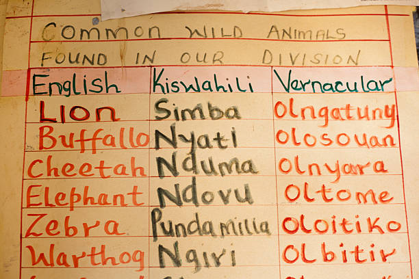

Enabling machine translation from Kiswahili into the indigenous East African languages Kidaw'ida, Kalenjin, and Dholuo, preserving these languages & supporting crowd-sourced voice recognition via Mozilla Common Voice for these languages

The dataset was created to enable translation from Kiswahili, which is the national language in Kenya, into three indigenous languages, namely, Kidaw'ida, Kalenjin, and Dholuo. All three languages are low resource, especially Kidaw'ida, which has only around 400,000 speakers and is at immediate risk of loss. By collecting the text and speech data, the project has taken a step towards preservation of these languages . The dataset consists of three parallel corpora: Kidaw'ida-Kiswahili; Kalenjin-Kiswahili; Dholuo-Kiswahili. On average, each corpus has thirty thousand sentence pairs.
In addition, the dataset has helped to preserve, revitalise and elevate the languages Kidaw'ida, Kalenjin, and Dholuo by making them work on Mozillas Common Voice Platform. The text and speech datasets are thereby supporting crowd-sourced voice recognition, promoting linguistic diversity and empoweromg local communities by enabling Natural Language Processing applications tailored to their needs. Namely, the resulting voice recognition datasets can be used to build AI voice applications such as advisory systems in local languages for farmers, citizens etc that "understand" speech input (instead of written input). As of August 2025, 120 hours of speech data have been recorded on Common Voice in Dholuo (with 14692 sentences available), 92 hours have been recorded for Kalendjin (With 29900 sentences available) and 56 hours have been recorded for Kidaw'ida (with 11773 sentences available). To download the crowd-sourced speech datasets in Kidaw'ida, Kalenjin, and Dholuo, visit https://datacollective.mozillafoundation.org/datasets?q=common+voice
Data characteristics
The dataset consists of three parallel corpora: Kidaw'ida-Kiswahili; Kalenjin-Kiswahili; Dholuo-Kiswahili. On averate, each corpus has thirty thousand sentence pairs. This dataset is available on Zenodo and on GitHub where it will continue to be grown and its quality improved. The project had a total of 105 speakers who came from different parts of each region where the three languages are spoken. Thus, different regional accents were included in the speech data, making the dataset more representative. Furthermore, both male and female speakers were contributing to the voice data.
Model characteristics
[Auto-enriched from linked project resources]
Processed Data: Three parallel corpora for machine translation -- Kidaw'ida-Kiswahili, Kalenjin-Kiswahili, and Dholuo-Kiswahili. Approx. 30,000 sentence pairs per language pair. License: CC-BY-4.0. Format: ZIP archive (3.3 MB). DOI: 10.5281/zenodo.13355021. Published: August 21, 2024. Application: Train machine translation models to translate from Kiswahili into three Kenyan indigenous languages. Data also available on GitHub with ongoing updates planned. PI: Audrey Mbogho (USIU-Africa). Funded by: Lacuna Fund.
Source: https://zenodo.org/records/13355021
How to use
> The datasets can help to build translation services from Kiswahili into three indigenous languages, namely, Kidaw'ida, Kalenjin, and Dholuo.
> The datasets can help to preserve these three low resource languages, promote linguistic diversity and empower local communities by enabling Natural Language Processing applications tailored to their needs.
> the resulting voice recognition datasets can be used to build AI voice applications such as advisory systems in local languages for farmers, citizens etc that "understand" speech input (instead of written input).
Datasets
Additional resources
About
Powered by / Provided by: United States International University Africa (USIU) - Kenya, Kabarak University, Maseno University (Kenya)
Catalyzed by: Lacuna-Fund / Meridian (Climate-call) & FAIR Forward - AI for All, GIZ
Financed by: BMZ
Authors: Balthas Seibold
Contact: Audrey Mbogho (ambogho@usiu.ac.ke)